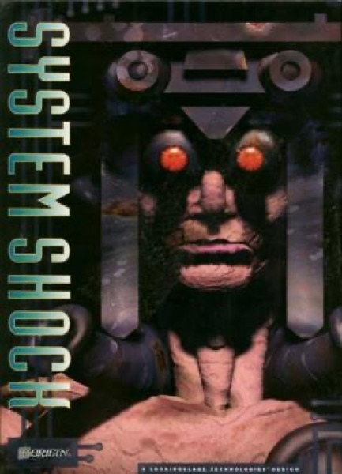

Immersive Sim · 1994
System Shock
SHODAN, audio logs, and the first genuinely systemic first-person world.

Cover: Wikipedia: System Shock
Facts
- Released
- 1994-09-23
- Genre
- Immersive Sim
- Category
- Immersive Sim
- Platforms
- PC
- Developers
- Looking Glass Studios
- Publishers
- Origin Systems